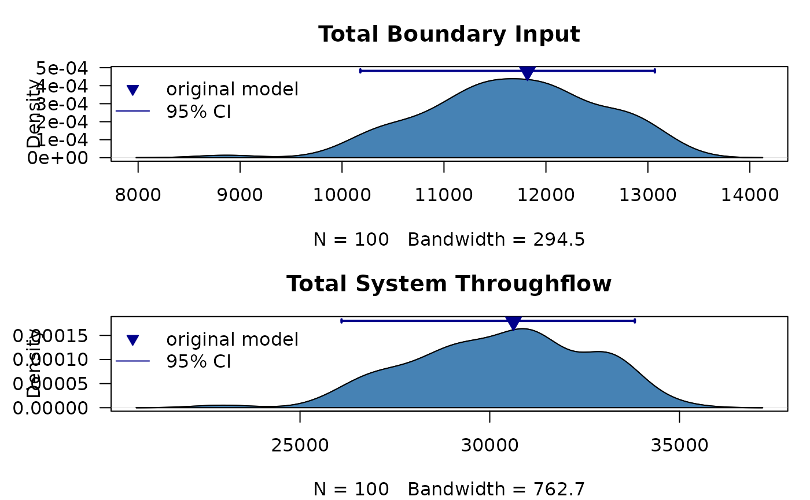
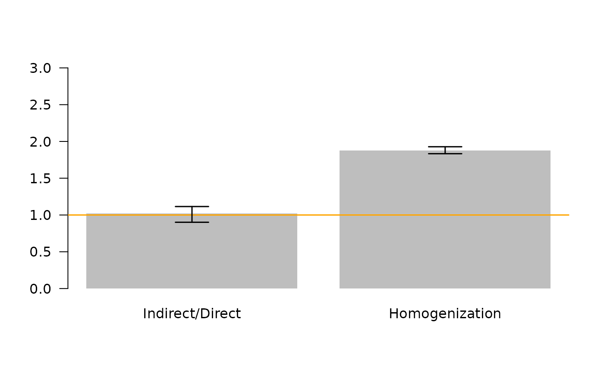

Uncertainty Analysis: Symmetric Values
Source:vignettes/uncertainty_symmetric.Rmd
uncertainty_symmetric.RmdUse Uncertainty Analysis to Sample Plausible Models
The simplest way to apply the enaUncertainty function is to assume a
single symmetric percent of variation around each network flow (see
example). However, in some cases the user might want to specify
differing amounts of flow uncertainty for each model flux. For example,
the user might want to set the flow uncertainty level to match something
like the estimated standard deviation of the flow or perhaps the 95%
confidence interval. The key is that in this example we will set a
symmetric range of flow values for each flow that the
enaUncertainty() function will then use to explore/sample
the space of plausible models.
The first step in this example is to load the data
# load data
data(troModels) # load the set of trophic models distributed with the enaR package
m <- troModels$`Cone Springs` # select the 6th model, which is the cone spring model (Kay et al. 1989; from Tilly)We then need to provide the information that required for the uncertainty function, including the uncertainty data. Notice in the example that the uncertainty data for the flows is built into a separate data frame in sparse matrix format for each of the model internal flows, and boundary inputs, exports, and respirations.
# internal flows
f.rows=c(1,2,2,3,3,4,5,5) # starting node
f.cols=c(5,3,5,4,5,5,2,3) # ending node
f.vals=c(2220.25,18.75,400,92.5,50,41.75,1301.25,577.25) # uncertainty values
f.df=data.frame(f.rows, f.cols, f.vals) # construct the data frame.
# inputs
z.rows=c(1,5) # node number of nodes with inputs
z.vals=c(2796,158.75) # input flow values (assumed greater than originally observed values)
z.df=data.frame(z.rows, z.vals)
# exports
e.rows=c(1,2,5)
e.vals=c(75,63.75,215)
e.df=data.frame(e.rows, e.vals)
#respirations
r.rows=c(1,2,3,4,5)
r.vals=c(500.75,818.75,453.5,50.75,777.25)
r.df=data.frame(r.rows, r.vals)Notice that the internal flows uncertainty data frame has three columns: the starting node of the flow, the ending node of the flow, and the positive flow amount, which will serve as the upper limit of the flow in the sampled models, and the difference between this value and and the original will be used to create the lower limit. Here, the function is assuming that the uncertainty amount provided is larger than the original model. The inputs, exports, and respriations uncertainty data frames have two columns: the node effected and the flow amount, which is applied in the same manner as the internal flows.
We can then call the enaUncertainty function to find a set of plausible models for the system given the specified flow uncertainty.
# specify uncertainty function parameters
iter = 100 # the number of plausible models to return
# conduct the uncertainty analysis.
plausible.sym <- enaUncertainty(x = m, type = "sym", iter = iter,
F.sym = f.df, z.sym = z.df, e.sym = e.df, r.sym = r.df)
#> Warning in lsei(E = E, F = F, G = G, H = H): No equalities - setting type = 2
length(plausible.sym) # should be equal to iter.
#> [1] 100Notice that when this code is executed properly, you may still get a
warning message from the limSolve package (called from
within the enaUncertainty function) that states the following:
Warning message: In lsei(E = E, F = F, G = G, H = H) : No equalities - setting type = 2
This is ok, and does not indicate a problem with the code’s execution.
We can always check to make sure that the plausible models generated are at steady-state using the following, which we expect to evaluate to zero indicating that all of the models were generated and were balanced.
Applying Selected ENA
Given the list of plausible models, we can then apply any of the network analyses to the models. To illustrate this, we find the whole network statistics generated by the enaR package.
# apply selected ENA
ns <- lapply(plausible.sym, get.ns) # get ENA whole network statstics (metrics, indicators)
ns <- as.data.frame(do.call(rbind, ns))
ns.original <- as.data.frame(get.ns(m))Lets see how the uncertainty in model flows changed the model inputs and total system throughflow by plotting the results
opar <- par(las = 1, mfcol = c(2,1), mar = c(4,5,3,1))
d <- density(ns$Boundary)
plot(d, main = "Total Boundary Input", ylim=c(0,max(d$y)+(max(d$y)*0.11)))
polygon(d, col = "steelblue")
ci95 <- quantile(ns$Boundary, probs = c(0.025, 0.975))
points(x=ns.original$Boundary, y=(max(d$y)+max(d$y)*0.1),
pch=25, col='darkblue',cex=1.5,bg='darkblue')
lines(x=c(ci95[1],ci95[2]),
y=c((max(d$y)+max(d$y)*0.1),(max(d$y)+max(d$y)*0.1)),
col='darkblue', lwd=2)
lines(x=c(ci95[1],ci95[1]),
y=c((max(d$y)+max(d$y)*0.1)-(max(d$y)*0.02),(max(d$y)+max(d$y)*0.1)+(max(d$y)*0.02)),
col='darkblue', lwd=2)
lines(x=c(ci95[2], ci95[2]),
y=c((max(d$y)+max(d$y)*0.1)-(max(d$y)*0.02),(max(d$y)+max(d$y)*0.1)+(max(d$y)*0.02)),
col='darkblue', lwd=2)
legend('topleft', legend=c('original model','95% CI'),
pch=c(25,NA), lty=c(NA,1), col='darkblue',
pt.bg=c('darkblue',NA), bty='n')
d <- density(ns$TST)
plot(d, main = "Total System Throughflow",
ylim=c(0,max(d$y)+(max(d$y)*0.11)))
polygon(d, col = "steelblue")
ci95 <- quantile(ns$TST, probs = c(0.025, 0.975))
points(x=ns.original$TST, y=(max(d$y)+max(d$y)*0.1),
pch=25, col='darkblue',cex=1.5,bg='darkblue')
lines(x=c(ci95[1],ci95[2]),
y=c((max(d$y)+max(d$y)*0.1),(max(d$y)+max(d$y)*0.1)),
col='darkblue', lwd=2)
lines(x=c(ci95[1],ci95[1]),
y=c((max(d$y)+max(d$y)*0.1)-(max(d$y)*0.02),(max(d$y)+max(d$y)*0.1)+(max(d$y)*0.02)),
col='darkblue', lwd=2)
lines(x=c(ci95[2], ci95[2]),
y=c((max(d$y)+max(d$y)*0.1)-(max(d$y)*0.02),(max(d$y)+max(d$y)*0.1)+(max(d$y)*0.02)),
col='darkblue', lwd=2)
legend('topleft', legend=c('original model','95% CI'),
pch=c(25,NA), lty=c(NA,1), col='darkblue',
pt.bg=c('darkblue',NA), bty='n')
Next, lets use the 95% CI to make statisitcal inferences about the hypothesized “dominance of indirect effects” (Higashi and Patten 1991, Salas and Borrett 2010, Borrett et al. 2016), and “network homogenization” (Fath and Patten 1999, Borrett and Salas 2010, Borrett et al. 2016).
# find 95% confidence intervals
id.95ci <- quantile(ns$ID.F, probs = c(0.025, 0.975))
hmg.95ci <- quantile(ns$HMG.O, probs = c(0.025, 0.975))
# barplot of the calculated values for the original model
opar <- par(las = 1)
bp <- barplot(c(ns.original$ID.F, ns.original$HMG.O),
ylim = c(0,3),
col = "grey",
border = NA,
names.arg = c("Indirect/Direct", "Homogenization"))
abline(h = 1, col = "orange", lwd = 1.5) # threshold value
# add 95CI error bars from Uncertainty Analysis
arrows(bp, c(id.95ci[1], hmg.95ci[1]),
bp, c(id.95ci[2], hmg.95ci[2]),
code = 3, lwd = 1.5, angle = 90, length = 0.2, col = "black")
These results show indicate that while the ratio of indirect to direct flows is greater than 1 in this model, which indicates a “dominance of indirect effects”, the 95% confidence interval includes 1 (and smaller values). Thus, given our level of uncertainty, we cannot be confident that Indirect/Direct > 1 in the model and cannot be sure that indirect effects are dominant. However, the 95% CI for the homogenization parameter does not include 1, so we can conclude the network homogenization is occurring in this model.